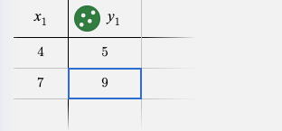
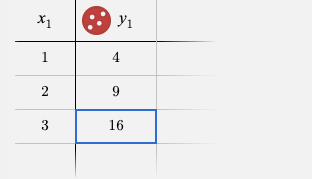
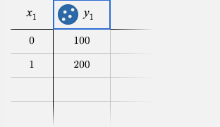

Mastery Status
Complete this to unlock the Desmos God wallpaper pack.
Stop doing algebra manually. Use these "magic codes" to make Desmos solve Linear, Quadratic, and Exponential problems in seconds.
Complete this to unlock the Desmos God wallpaper pack.
Best for: Problems with coordinates like (x, y) or a data table.
In the xy-plane, a line passes through the points (4, 5) and (7, 9). Which of the following is an equation of the line?
Open the calculator, click +, and select Table.
Type the points (4, 5) and (7, 9) into rows 1 and 2.
Click the empty space Line 2 (below the table) and paste the code below:
y_1 ~ m*x_1 + b
Done! Desmos gives you m and b instantly. No math required.
✅ Final Answer:
m = 1.33, b = -0.33
The equation is: y = 1.33x - 0.33 (Answer choice A)
Best for: Problems with 3 points, parabolas, or paths of projectiles.
A parabola in the xy-plane passes through the points (1, 4), (2, 9), and (3, 16). Which of the following defines the relationship between x and y?
Open the calculator, click +, and select Table.
Enter the points: (1, 4), (2, 9), and (3, 16) into the table.
Click Line 2 (below the table) and paste the Quadratic Regression code.
y_1 ~ a*x_1^2 + b*x_1 + c
Success! Desmos gives you a, b, and c. You just found the whole equation.
✅ Final Answer:
a = 1, b = 2, c = 1
The equation is: y = x² + 2x + 1 (Answer choice A)
Best for: Problems with doubling, halving, or percent growth.
A population of bacteria starts at 100 and doubles every year. If y is the population after x years, which of the following equations models this growth?
At year 0, population is 100. At year 1, it's 200. Put these in a table.
Click Line 2 (below the table) and paste the Exponential code.
y_1 ~ a*b^x_1
Perfect! a = 100 (start value) and b = 2 (doubling rate). Equation found.
✅ Final Answer:
a = 100, b = 2
The equation is: y = 100(2)ˣ (Answer choice A)
Don't just read it. Try it. Type one of the codes above into your own Desmos calculator now to see the math happen.
"A parabola passes through $(1, 4)$, $(2, 9)$, and $(3, 16)$. Find its equation."